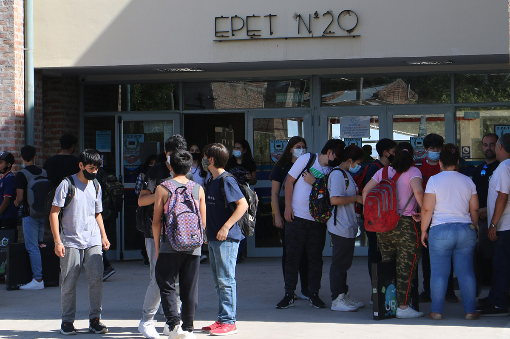
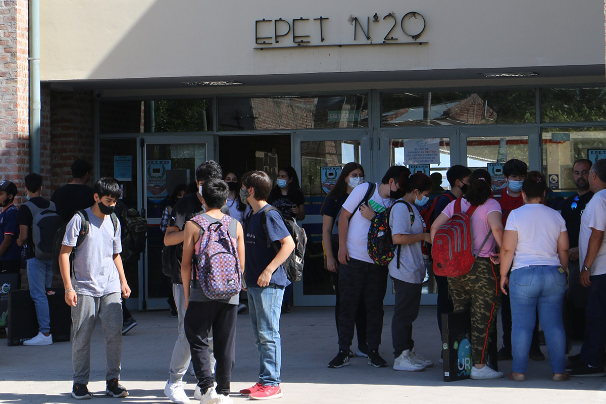

Presentación
Sitio web informativo sobre la educación en la E.P.E.T20
Este proyecto busca reflexionar sobre cómo la enseñanza puede mejorar, logrando un mejor aprendizaje impulsando la educacion, dando una opinion desde el respeto y la comprencion de ambos lados de la moneda.
Empeze este pensando este projecto hace meses y como lo haria, de que hablaria y como se veria. Ahora la realidad es otra, estoy haciendo este projecto solo y con demaciadas cosas en mi vida personal.
Pero siguendo adelante y con ganas de aportar mi parte para que las cosas cambien, sin echarle la culpa de todo a nadie, reconociendo errores de las dos partes, los estudiantes (los que estan sentados en los bancos queriendo irse a sus casas rapido viendo en cuanto pasa el cole) y los profesores (las personas que estan detras de un pizaron y delante a 30 jovenes que no les interesa lo que estas explicando en la moyoria de los casos).

 
